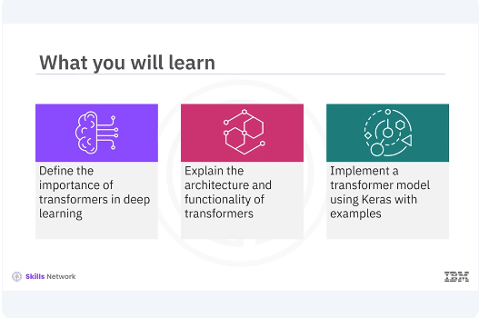
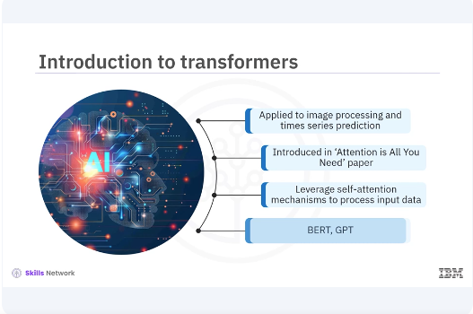
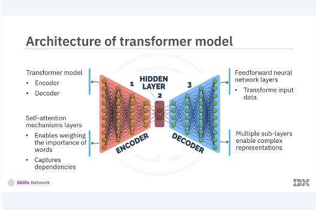
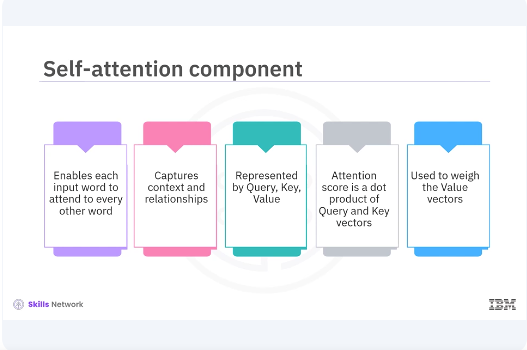
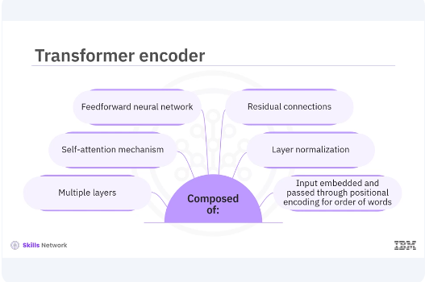
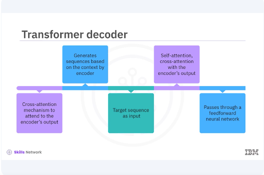

Introducing To Transformers

Welcome to this video on Transformers in Keras. After watching this video, you'll be able to define the importance of transformers in deep learning, explain the architecture and functionality of transformers, implement a transformer model using Keras with examples.

Transformers have transformed the field of natural language processing and are now being applied to a wide range of tasks, including image processing and time series prediction. Transformers were introduced by Vaswani Adal in the landmark paper, "Attention is All You Need". Unlike traditional sequence models such as RNNs, transformers leverage self attention mechanisms to process and put data in parallel, making them highly efficient and powerful. Transformers are now the backbone of state of the art models like BERT, GPT, and many others.

The transformer model consists of two main parts, the encoder and the decoder. Both the encoder and the decoder are composed of layers that include self attention mechanisms and feed forward neural networks. Self-attention allows the model to weigh the importance of different words in a sentence when encoding a particular word. This is crucial for capturing dependencies that are far apart in the input sequence. The feed forward neural network layers help in transforming the input data after the self attention mechanism. Each layer in the encoder and decoder stacks multiple such sub layers enabling the model to learn complex representations.

Self-attention is the core component of the transformer architecture. It allows each word and the input to attend to every other word, making it possible to capture contexts and relationships more effectively. In self-attention, each word is represented by three vectors. Query, key and value. The attention score is computed as a dot product of the query and key vectors, which is then used to weigh the value vectors. This process allows the model to focus on different parts of the input sequence when making predictions.
pyenv activate venv3.10.4
import tensorflow as tf
from tensorflow.keras.layers import Layer
class SelfAttention(Layer):
def __init__(self, d_model):
super(SelfAttention, self).__init__()
self.d_model = d_model
self.query_dense = tf.keras.layers.Dense(d_model)
self.key_dense = tf.keras.layers.Dense(d_model)
self.value_dense = tf.keras.layers.Dense(d_model)
def call(self, inputs):
q = self.query_dense(inputs)
k = self.key_dense(inputs)
v = self.value_dense(inputs)
attention_weights = tf.nn.softmax(
tf.matmul(q, k, transpose_b=True) /
tf.math.sqrt(tf.cast(self.d_model, tf.float32)),
axis=-1
)
output = tf.matmul(attention_weights, v)
return output
# Example usage
inputs = tf.random.uniform((1, 60, 512)) # Batch size of 1, sequence length of 60, and model dimension of 512
self_attention = SelfAttention(d_model=512)
output = self_attention(inputs)
print(output.shape) # Should print (1, 60, 512)
In this code example, the self attention class defines the self attention mechanism. The init method initializes the dense layers for query, key and value projections. The call method computes the attention weights and applies them to the value vectors to get the output. The tf.nn.softmax parameter applies the Softmax function to the attention scores to get the attention weights.

The transformer encoder is composed of multiple layers, each containing a self attention mechanism followed by a feed forward neural network. Each layer also includes residual connections and layer normalization to stabilize training. The input to the encoder is first embedded and then passed through positional encoding to add information about the position of words in the sequence. This helps the model understand the order of words.
class TransformerEncoder(Layer):
def __init__(self, d_model, num_heads, dff, rate=0.1):
super(TransformerEncoder, self).__init__()
self.mha = tf.keras.layers.MultiHeadAttention(
num_heads=num_heads,
key_dim=d_model
)
self.ffn = tf.keras.Sequential([
tf.keras.layers.Dense(dff, activation='relu'),
tf.keras.layers.Dense(d_model)
])
def call(self, x, training, mask):
attn_output = self.mha(x, x, x, attention_mask=mask) # Self attention
attn_output = self.dropout1(attn_output, training=training)
out1 = self.layernorm1(x + attn_output) # Residual connection and normalization
ffn_output = self.ffn(out1) # Feed forward network
ffn_output = self.dropout2(ffn_output, training=training)
out2 = self.layernorm2(out1 + ffn_output) # Residual connection and normalization
return out2
# Example usage
encoder = TransformerEncoder(d_model=512, num_heads=8, dff=2048)
x = tf.random.uniform((1, 60, 512))
mask = None
In the example, the transformer encoder class defines the transformer encoder. The init method initializes the multi head attention, feed forward network, layer normalization, and dropout layers. The multi head attention method applies multi head attention to the input. The call method applies self attention, residual connection, normalization, feed forward network, and another residual connection and normalization.

The transformer decoder is similar to the encoder, but with an additional cross attention mechanism to attend to the encoders output. This allows the decoder to generate sequences based on the context provided by the encoder. The decoder takes the target sequence as input, applies self attention and cross attention with the encoders output, and then passes through a feed forward neural network.
class TransformerDecoder(Layer):
def __init__(self, d_model, num_heads, dff, rate=0.1):
super(TransformerDecoder, self).__init__()
self.mha1 = tf.keras.layers.MultiHeadAttention(
num_heads=num_heads,
key_dim=d_model
)
self.mha2 = tf.keras.layers.MultiHeadAttention(
num_heads=num_heads,
key_dim=d_model
)
self.ffn = tf.keras.Sequential([
tf.keras.layers.Dense(dff, activation='relu'),
tf.keras.layers.Dense(d_model)
])
self.layernorm1 = tf.keras.layers.LayerNormalization(epsilon=1e-6)
self.layernorm2 = tf.keras.layers.LayerNormalization(epsilon=1e-6)
self.layernorm3 = tf.keras.layers.LayerNormalization(epsilon=1e-6)
self.dropout1 = tf.keras.layers.Dropout(rate)
self.dropout2 = tf.keras.layers.Dropout(rate)
self.dropout3 = tf.keras.layers.Dropout(rate)
def call(self, x, enc_output, training, look_ahead_mask, padding_mask):
attn1 = self.mha1(x, x, x, attention_mask=look_ahead_mask) # Self attention
attn1 = self.dropout1(attn1, training=training)
out1 = self.layernorm1(x + attn1) # Residual connection and normalization
attn2 = self.mha2(
out1,
enc_output,
enc_output,
attention_mask=padding_mask
) # Cross attention
attn2 = self.dropout2(attn2, training=training)
out2 = self.layernorm2(out1 + attn2) # Residual connection and normalization
ffn_output = self.ffn(out2) # Feed forward network
ffn_output = self.dropout3(ffn_output, training=training)
out3 = self.layernorm3(out2 + ffn_output) # Residual connection and normalization
return out3
In the example, the transformer decoder class defines the transformer decoder. The init method initializes the multi head attention, feed forward network, layer normalization, and drop out layers. The multi head attention method applies multi head attention to the input and encoder output. The call method applies self attention, cross attention, residual connection, normalization, feed forward network, and another residual connection and normalization.
In this video, you learned the transformer model consists of two main parts, the encoder and the decoder. Both the encoder and decoder are composed of layers that include self attention mechanisms and feed forward neural networks. Transformers have become a cornerstone in deep learning, especially in natural language processing. Understanding and implementing transformers will enable you to build powerful models for various tasks.